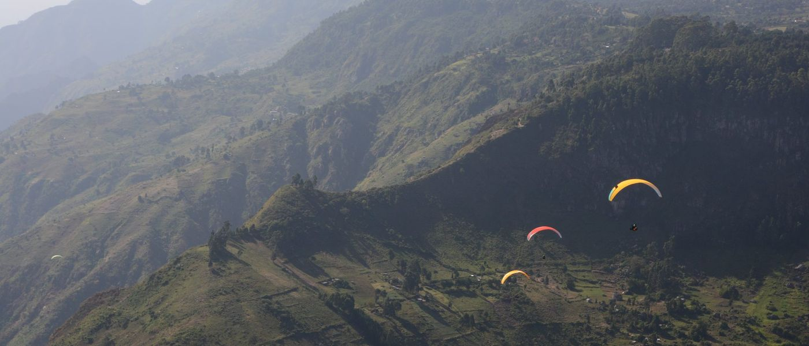

One only
Title Partner
- Name in the title
- Mark on kit and camera
- Segments in build-up and debrief
- First film credit
- Logo on live tracking

World record attempt · Kerio Valley, Kenya
Two paragliding world records for speed, 100 km and 200 km out and return.
01Record
100 km
35.94km/h
Michel Macquet (FRA)
23 Jan 2025 · [to confirm]
200 km
[to supply]
My paceNot a record course
36km/h
198.86 km in Kenya
6 Feb 2025
The time to beat: 100 km in 2 h 47 min.
Class O-3 is paragliders. Speed is the course distance over the time.
One FAI listing shows the 100 km mark as a claim under review, another as the record: FAI CIVL records.
My 198.86 km flight, about 36 km/h on a UP Trango X (EN C), was logged on XContest. It was not a record course: UP Paragliders.
The claim goes to the FAI under the Sporting Code, Section 7D.
02Course
Speed is distance over time.
100 km
2h 47min
200 km
5h 33min
03Valley

My Kenya base, and the site where the world speed records are chased.
04Window
Alongside my two Kenya expeditions.
Build-up episodes, newsletter
Live tracking, daily updates
Film, debrief episode, flight data

05Audience
On the podcast, its YouTube channel and a newsletter about four times a month.
06Partner
Always marked as sponsored. Prices in the media kit, on request.
One only
Kit
Brands, people